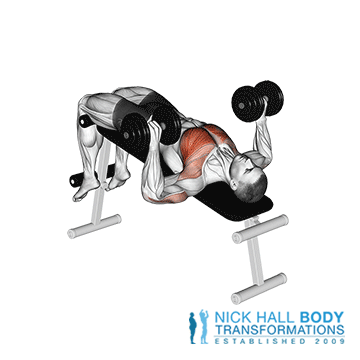
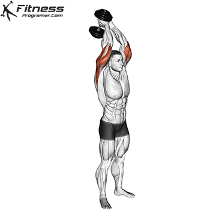
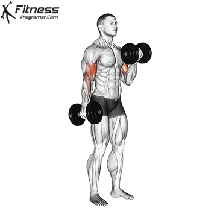
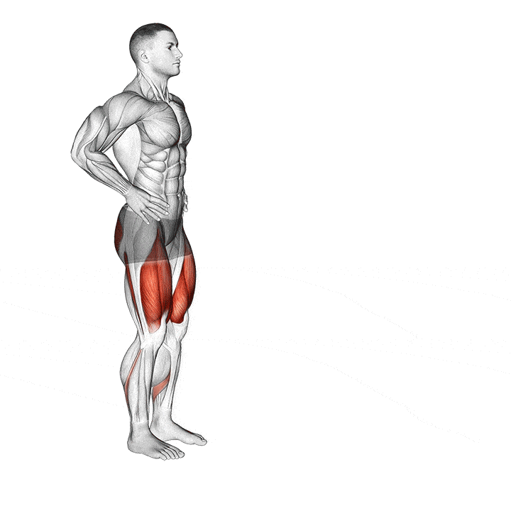
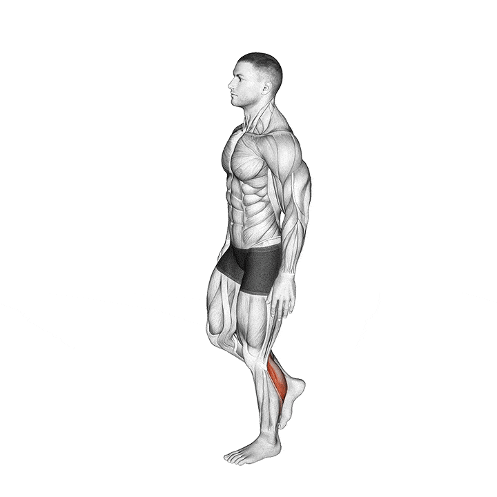
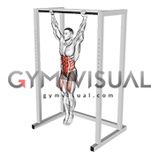
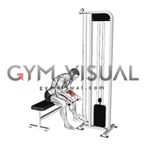
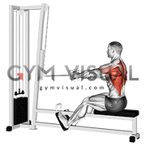
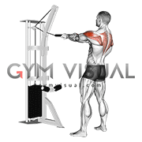

Targeted area: Your back and upper arm muscles.
How to do this exercise:
1. Place your left knee on the end of a sturdy bench and
place your left hand palm-down on the bench for balance.
2. With your back parallel to the ground, reach down with
your right hand and grab a dumbbell with your palm facing the bench.
3. Slowly bring the dumbbell up to your chest. Squeeze your back
and shoulder muscles and slowly straighten your arm to the starting position.
4. Finish 1 set, then switch arms and do 1 set with your right knee and right hand on the bench.

Dumbbell Shoulder Press
Targeted area: Your shoulder muscles.
How to do this exercise:
1. Sit or stand with a dumbbell in each hand, your palms facing
forward, and your elbows out to your side at 90-degree angles.
2. Without leaning back or arching your back, press the dumbbells
up over your head until your arms are almost straight.
3. Slowly return them to the starting position.

Dumbbell Chest Press
Targeted area: Your chest muscles.
How to do this exercise:
1. Lie flat on a bench with a dumbbell in each hand and your palms facing forward.
2. Slowly press the dumbbells upward until your arms are directly over the shoulders.
Be careful not to lock your elbows.
3. Slowly lower the dumbbells to the starting position. Your elbows should be a little
lower than your shoulders.

BARBELL SQUAT
Targeted area: Your leg muscles, including your quadriceps, hamstrings, and calves.
How to do this exercise:
1. Squats can be done with or without weights.
2. Stand with your feet shoulder-width apart and slowly bend your knees, so your thighs are almost
parallel to the floor.
3. Slowly rise to your starting position.
4. To add resistance, hold a dumbbell or kettlebell close to your chest with both hands.









Weekly weight training schedule
Monday: Chest, shoulders, triceps, and core
dumbbell chest press
dumbbell shoulder press
dumbbell triceps extension
plank
Wednesday: Back, biceps, and core
dumbbell single-arm rows
bicep curl
resistance band pull apart
plank
Friday: Legs and core
lunges
squats
calf raises
plank